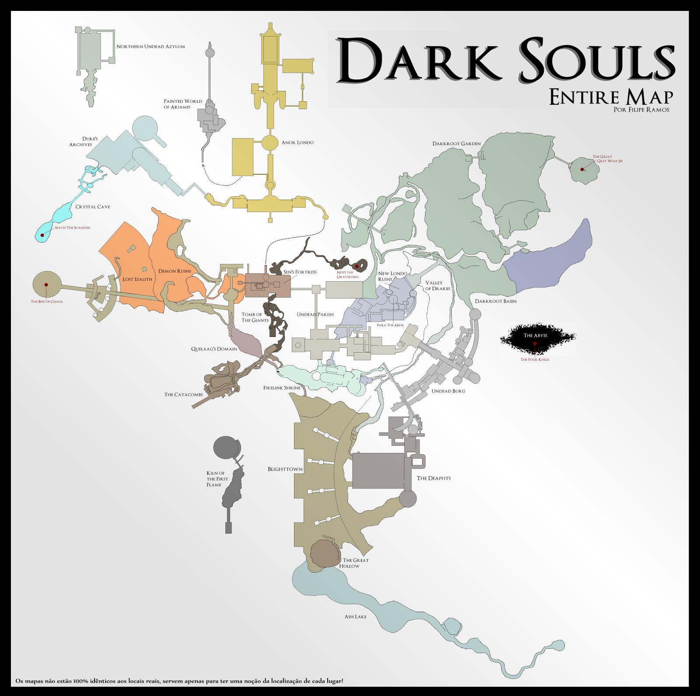
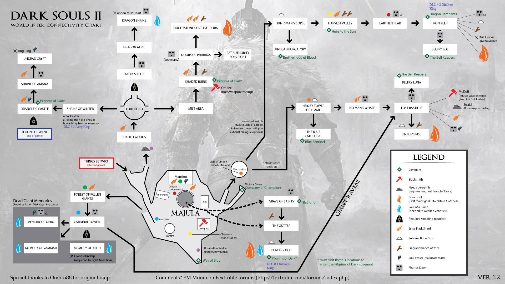

Gatunek: Action-adventure / Soulslike
Platformy: PlayStation 4, Xbox One, PC
Premiera: 22 marca 2019
Tryb gry: Singleplayer
Fabuła i świat

Mechanika gry
System rozwoju postaci
Unikalne cechy
Unikalne cechy
FULL GAMEPLAY:
LINK DO GAMEPLAYU
Gatunek: Action RPG / Soulslike
Platformy: PlayStation 4, PlayStation 5, Xbox One, Xbox Series X/S, PC
Premiera: 25 lutego 2022
Tryb gry: Singleplayer, multiplayer (kooperacja i PvP)
Fabuła i świat

Mechanika gry
System rozwoju postaci
Unikalne cechy
Dlaczego warto?
FULL GAMEPLAY:
LINK DO GAMEPLAYU

Gatunek: Action RPG / Soulslike
Platformy: PlayStation 3/4/5, Xbox 360/One/Series X, PC, Nintendo Switch (remastery)
Premiery: Dark Souls – 2011, Dark Souls II – 2014, Dark Souls III – 2016
Tryb gry: Singleplayer, multiplayer (kooperacja i PvP)
Fabuła i świat
DS1
DS2
DS3

Mechanika gry
System rozwoju postaci
Unikalne cechy
FULL GAMEPLAY DS1:
LINK DO GAMEPLAYU DS1FULL GAMEPLAY DS2:
LINK DO GAMEPLAYU DS2FULL GAMEPLAY DS3:
LINK DO GAMEPLAYU DS3DARKSOULS1 WIKI: https://darksouls.wiki.fextralife.com/Dark+Souls+Wiki
DARKSOULS2 WIKI: https://darksouls2.wiki.fextralife.com/Dark+Souls+2+Wiki
DARKSOULS3 WIKI: https://darksouls3.wiki.fextralife.com/Dark+Souls+3+Wiki
Gatunek: Action RPG / horror gotycki
Platforma: PlayStation 4
Premiera: 24 marca 2015
Tryb gry: Singleplayer, multiplayer (kooperacja i PvP)
Fabuła i świat

Mechanika gry
System rozwoju postaci
Unikalne cechy
FULL GAMEPLAY:
LINK DO GAMEPLAYUBLOODBORNE WIKI: https://bloodborne.wiki.fextralife.com/Bloodborne+Wiki